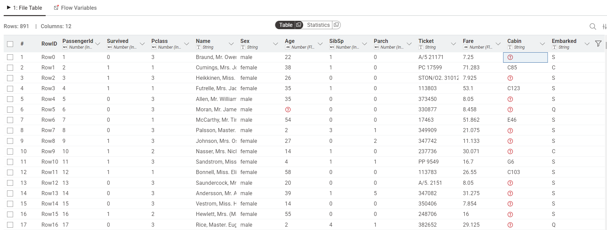
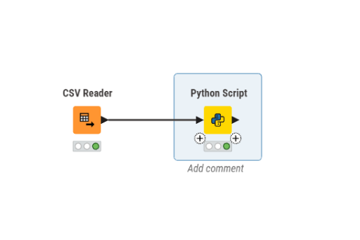
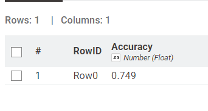
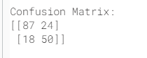
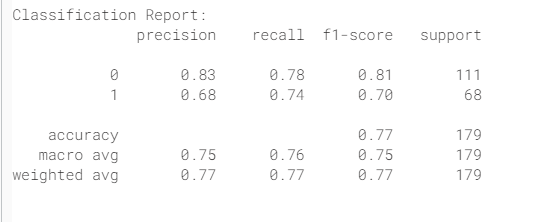

Analisis Data Menggunakan Naive Bayes pada Titanic Dataset#
1. Pendahuluan#
Dalam era data mining, klasifikasi merupakan salah satu teknik penting untuk memprediksi suatu kejadian berdasarkan data historis. Salah satu algoritma klasifikasi yang sederhana namun efektif adalah Naive Bayes.
Pada proyek ini dilakukan analisis data menggunakan algoritma Naive Bayes dengan bantuan Python (library sklearn) yang dijalankan melalui KNIME. Tujuan dari penelitian ini adalah untuk memprediksi apakah seorang penumpang Titanic selamat atau tidak.
2. Dataset#
Dataset yang digunakan adalah Titanic Dataset, yang berisi informasi mengenai penumpang kapal Titanic.
Sumber Dataset#
Dataset diperoleh dari: https://www.kaggle.com/datasets/yasserh/titanic-dataset
Tujuan:#
Memprediksi:
Selamat (Survived = 1)
Tidak Selamat (Survived = 0)
Fitur yang digunakan:#
Pclass → kelas penumpang
Sex → jenis kelamin
Age → umur
Fare → harga tiket
Contoh Data Awal#

3. Metode#
Metode yang digunakan adalah Gaussian Naive Bayes dari library sklearn.
Naive Bayes bekerja berdasarkan teori probabilitas Bayes dengan asumsi bahwa setiap fitur bersifat independen.
Tahapan:#
Mengambil data dari KNIME
Preprocessing:
Mengisi nilai kosong pada kolom Age
Mengubah data kategori menjadi numerik
Membagi data menjadi data latih dan data uji
Melatih model Naive Bayes
Melakukan prediksi
Evaluasi model
4. Implementasi#
Workflow KNIME#

Penjelasan#
CSV Reader digunakan untuk membaca dataset
Python Script digunakan untuk melakukan proses machine learning menggunakan sklearn
Script Python#
Berikut adalah potongan kode utama yang digunakan:
import knime.scripting.io as knio
import pandas as pd
from sklearn.model_selection import train_test_split
from sklearn.naive_bayes import GaussianNB
from sklearn.metrics import accuracy_score, confusion_matrix, classification_report
# 1. Ambil data dari KNIME
df = knio.input_tables[0].to_pandas()
# 2. Pilih kolom yang digunakan
df = df[['Pclass', 'Sex', 'Age', 'Fare', 'Survived']]
# 3. Preprocessing
# isi nilai kosong pada Age
df['Age'] = df['Age'].fillna(df['Age'].mean())
# ubah kategori ke numerik
df['Sex'] = df['Sex'].map({'male': 0, 'female': 1})
# 4. Pisahkan fitur & label
X = df[['Pclass', 'Sex', 'Age', 'Fare']]
y = df['Survived']
# 5. Split data
X_train, X_test, y_train, y_test = train_test_split(X, y, test_size=0.2)
# 6. Model Naive Bayes
model = GaussianNB()
model.fit(X_train, y_train)
# 7. Prediksi
y_pred = model.predict(X_test)
# 8. Evaluasi
acc = accuracy_score(y_test, y_pred)
cm = confusion_matrix(y_test, y_pred)
report = classification_report(y_test, y_pred)
print("= HASIL MODEL =")
print("Accuracy:", acc)
print("\nConfusion Matrix:")
print(cm)
print("\nClassification Report:")
print(report)
# 9. Output ke KNIME
result = pd.DataFrame({
"Accuracy": [acc]
})
knio.output_tables[0] = knio.Table.from_pandas(result)
5. Hasil dan Evaluasi#
Accuracy#
Model menghasilkan nilai akurasi sebesar 0.749 (sesuaikan dengan hasil yang kamu dapatkan).

Confusion Matrix#
Confusion matrix digunakan untuk melihat performa model dalam memprediksi kelas.

Classification Report#
Classification report menunjukkan nilai precision, recall, dan f1-score dari model.

6. Analisis Hasil#
Berdasarkan hasil yang diperoleh:
Model Naive Bayes mampu melakukan klasifikasi dengan cukup baik
Nilai akurasi menunjukkan bahwa sebagian besar prediksi sudah benar
Confusion matrix menunjukkan adanya beberapa kesalahan prediksi
Nilai precision dan recall menunjukkan performa model cukup seimbang
Faktor seperti jenis kelamin (Sex) dan kelas penumpang (Pclass) memiliki pengaruh yang signifikan terhadap hasil prediksi.
Namun demikian, model masih memiliki keterbatasan karena:
Mengasumsikan fitur saling independen
Tidak mempertimbangkan hubungan kompleks antar fitur
7. Kesimpulan#
Berdasarkan hasil analisis, dapat disimpulkan bahwa:
Algoritma Naive Bayes dapat digunakan untuk melakukan klasifikasi pada dataset Titanic
Model memberikan hasil yang cukup baik dengan tingkat akurasi yang memadai
Preprocessing data sangat berpengaruh terhadap performa model